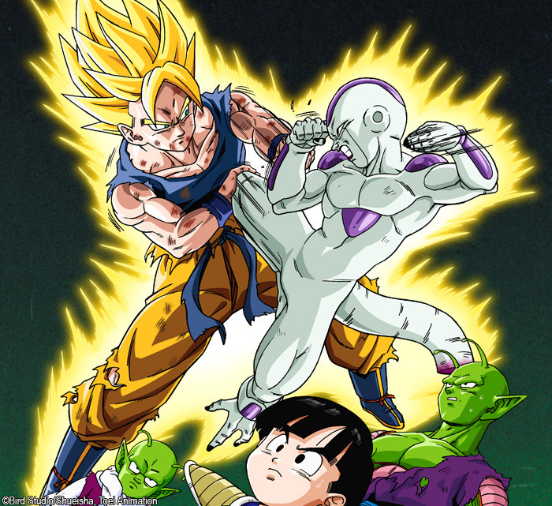

Saga dos Sayajins
Cinco anos após a batalha de Goku contra Piccolo, o mundo vivia em paz. Goku, que havia se casado com Chi-Chi,
agora tem um filho chamado Gohan. Goku levou Gohan até a casa do Kame para ele conhecer todos os amigos de seu
pai. Só que chegando à casa do Kame, Goku e os outros viram se aproximando um poderoso guerreiro, que se
identificou dizendo que era irmão mais velho de Goku (seu nome era Raditz) e que ele era um Sayajin (por isso
tinha um rabo) e perguntou por quê Goku não tinha destruído a Terra. Depois mandou Goku destruí-la e ele se
recusou, então Raditz sequestrou Gohan afim de convencer Goku a destruir a Terra e se aliar a ele. Nesse
instante chega Piccolo, e propõe a Goku uma aliança temporária para derrotar Raditz. Então Goku e Piccolo se
unem. Eles encontram Raditz e começam a primeira luta de DBZ. Goku e Piccolo apanham muito até que Goku segura
Raditz pelas costas e Piccolo usa um fireball contra Raditz. A fireball foi tão forte que acertou também Goku,
atravessando seu corpo. Assim Goku e Raditz morrem, só que antes de morrer Raditz avisa que daqui a um ano
outros dois Sayajins muito mais poderosos que ele virão atacar a Terra. Os guerreiros Z começam a treinar com
Kami-Samá e Goku no céu começa a andar pelo caminho da serpente, que leva até o planeta do Sr. Kaio. Goku
consegue atravessar o caminho da serpente e chega até o planeta do Sr. Kaio para treinar. Com seu treinamento
Goku aprende o KAIOKEN e a GENKIDAMA. Na Terra Mestre Kame reune as Dragon Balls e recussita Goku. Goku começa
a correr pelo caminho da serpente para voltar à Terra. Nisso, os dois Sayajins, chamados Nappa e Vegeta chegam
a Terra. Kurillin, Teshinhan, Khaos, Piccolo, Gohan e Yamcha começam a lutar contra os Sayajins. Yamcha começa
a lutar e quando pensa que derrotou um deles, o Sayajin gruda nas costas de Yamcha e explode. Yamcha morre.
Kurillin derrota os outros Sayajin, e eles começam a lutar contra Nappa. Nappa é muito forte. Chaos tenta
matar Nappa com um ataque suicida mas nem o fere, e morre. Nisso Teshinham que havia perdido um braço, fica
furioso e usa um golpe gastando toda a sua energia mas não provoca nenhum dano à Nappa, e morre. Piccolo,
Kurillin e Gohan tentam de todas as formas derrotar Nappa até que Vegeta pergunta a eles quem é Goku. Vegeta
dá um prazo de três horas para Goku chegar. Passam-se as três horas e Goku não chega. Nappa utiliza um
poderoso ataque contra Gohan, mas Piccolo fica na sua frente para lhe defender, e morre. Gohan e Kurillin já
se achavam perdidos até que Goku chega. Goku está incrivelmente forte e não tem trabalho para derrotar Nappa.
Vegeta, para honrar os Sayajins, mata Nappa dizendo que não precisa de um soldado impréstavel como ele. Assim
Vegeta e Goku começam a lutar. Goku utiliza o duplo kaioken e consegue superar os poderes de Vegeta, mas vendo
que seria derrotado Vegeta cria uma bola de energia no céu e vira um macaco (Oazuru) e fica muito forte
derrotando Goku. Gohan e Kurillin que haviam se retirado do campo, voltam a batalha e começam a lutar contra
Vegeta. Yajirobe que assistia a luta aproveita um momento de distração de Vegeta e corta-lhe o rabo,e Vegeta
volta a sua forma normal. Enquanto Gohan lutava contra Vegeta, Goama e ku criam uma genkidama, entregam a
Kurillin que não consegue acertar Vegeta mas ela bate em Gohan e volta contra Vegeta que explode. Mesmo assim
Vegeta ainda não morreu, e começa a atacar eles, mas depois ele vê o rabo de Gohan crescer novamente, isso
significa que ele vai virar um macaco gigante. Nisso Gohan vira um macaco gigante e começa atacar Vegeta.
Vegeta apanha muito mas consegue cortar o rabo de Gohan, que cai em cima dele esmagando-o. Vegeta, que estava
muito fraco, abandona o campo de batalha humilhado, Kurillin ainda tentou matá-lo mas a pedido de Goku ele
deixa Vegeta escapar, que promete voltar para se vingar.
Saga do Freeza

Cinco anos após a batalha de Goku contra Piccolo, o mundo vivia em paz. Goku, que havia se casado com Chi-Chi,
agora tem um filho chamado Gohan. Goku levou Gohan até a casa do Kame para ele conhecer todos os amigos de seu
pai. Só que chegando à casa do Kame, Goku e os outros viram se aproximando um poderoso guerreiro, que se
identificou dizendo que era irmão mais velho de Goku (seu nome era Raditz) e que ele era um Sayajin (por isso
tinha um rabo) e perguntou por quê Goku não tinha destruído a Terra. Depois mandou Goku destruí-la e ele se
recusou, então Raditz sequestrou Gohan afim de convencer Goku a destruir a Terra e se aliar a ele. Nesse
instante chega Piccolo, e propõe a Goku uma aliança temporária para derrotar Raditz. Então Goku e Piccolo se
unem. Eles encontram Raditz e começam a primeira luta de DBZ. Goku e Piccolo apanham muito até que Goku segura
Raditz pelas costas e Piccolo usa um fireball contra Raditz. A fireball foi tão forte que acertou também Goku,
atravessando seu corpo. Assim Goku e Raditz morrem, só que antes de morrer Raditz avisa que daqui a um ano
outros dois Sayajins muito mais poderosos que ele virão atacar a Terra. Os guerreiros Z começam a treinar com
Kami-Samá e Goku no céu começa a andar pelo caminho da serpente, que leva até o planeta do Sr. Kaio. Goku
consegue atravessar o caminho da serpente e chega até o planeta do Sr. Kaio para treinar. Com seu treinamento
Goku aprende o KAIOKEN e a GENKIDAMA. Na Terra Mestre Kame reune as Dragon Balls e recussita Goku. Goku começa
a correr pelo caminho da serpente para voltar à Terra. Nisso, os dois Sayajins, chamados Nappa e Vegeta chegam
a Terra. Kurillin, Teshinhan, Khaos, Piccolo, Gohan e Yamcha começam a lutar contra os Sayajins. Yamcha começa
a lutar e quando pensa que derrotou um deles, o Sayajin gruda nas costas de Yamcha e explode. Yamcha morre.
Kurillin derrota os outros Sayajin, e eles começam a lutar contra Nappa. Nappa é muito forte. Chaos tenta
matar Nappa com um ataque suicida mas nem o fere, e morre. Nisso Teshinham que havia perdido um braço, fica
furioso e usa um golpe gastando toda a sua energia mas não provoca nenhum dano à Nappa, e morre. Piccolo,
Kurillin e Gohan tentam de todas as formas derrotar Nappa até que Vegeta pergunta a eles quem é Goku. Vegeta
dá um prazo de três horas para Goku chegar. Passam-se as três horas e Goku não chega. Nappa utiliza um
poderoso ataque contra Gohan, mas Piccolo fica na sua frente para lhe defender, e morre. Gohan e Kurillin já
se achavam perdidos até que Goku chega. Goku está incrivelmente forte e não tem trabalho para derrotar Nappa.
Vegeta, para honrar os Sayajins, mata Nappa dizendo que não precisa de um soldado impréstavel como ele. Assim
Vegeta e Goku começam a lutar. Goku utiliza o duplo kaioken e consegue superar os poderes de Vegeta, mas vendo
que seria derrotado Vegeta cria uma bola de energia no céu e vira um macaco (Oazuru) e fica muito forte
derrotando Goku. Gohan e Kurillin que haviam se retirado do campo, voltam a batalha e começam a lutar contra
Vegeta. Yajirobe que assistia a luta aproveita um momento de distração de Vegeta e corta-lhe o rabo,e Vegeta
volta a sua forma normal. Enquanto Gohan lutava contra Vegeta, Goama e ku criam uma genkidama, entregam a
Kurillin que não consegue acertar Vegeta mas ela bate em Gohan e volta contra Vegeta que explode. Mesmo assim
Vegeta ainda não morreu, e começa a atacar eles, mas depois ele vê o rabo de Gohan crescer novamente, isso
significa que ele vai virar um macaco gigante. Nisso Gohan vira um macaco gigante e começa atacar Vegeta.
Vegeta apanha muito mas consegue cortar o rabo de Gohan, que cai em cima dele esmagando-o. Vegeta, que estava
muito fraco, abandona o campo de batalha humilhado, Kurillin ainda tentou matá-lo mas a pedido de Goku ele
deixa Vegeta escapar, que promete voltar para se vingar.
Saga dos andróides
Um ano após a luta contra Freeza, a Terra vivia em paz. Mas Freeza reaparece em forma Andróide, reconstruído
por seu pai, King Cold. Os dois chegam à Terra. Vegeta, Piccolo e os outros não sabem o que fazer quando de
repente surge um garoto cabeludo em forma de Super Sayajin, e mata Freeza e seu pai rapidamente. Ele é Trunks,
o filho de Vegeta e Bulma vindo de um futuro alternativo. Ele avisa que andróides da Red Ribbon, números 17 e
18, destruirão a Terra em 3 anos após Goku morrer por causa de uma doença no coração. Os Guerreiros Z
preparam-se para o perigo futuro. Nesse meio tempo surgem os Andróides #19 e 20 que conseguemderrotar Goku, já
que estava debilitado por sua doença do coração. Nisso, Vegeta, que agora pode se transformar em super
Sayajin, derrota o Andróide #19. O Andróide #20 é Dr. Gero, que construiu os andróides e reconstruiu ele
mesmo. Dr. Gero foge para ativar os andróides #17 e 18. Os Guerreiros Z vão até uma base, numa montanha.
Vegeta destrói a porta. Trunks fica surpreso ao ver os andróides #17 e 18 matarem o Dr. Gero por começar a dar
ordens a eles. Os 2 ativam outro andróide, o #16, e os andróides partem para matar Goku. A #18 derrota Vegeta,
mas um perigo maior chega, Cell um ser criado por Dr. Gero no futuro de Trunks, que é feito com céluas de
Goku, Vegeta, Piccolo e Freeza. Para se tornar um ser perfeito, ele precisa absorver os andróides #17 e 18.
Goku, Vegeta, Truns e Gohan, estão no palácio celestial de Kami-Samá. Ao lutar com #17 Piccolo é morto por
Cell. Cell absorve primeiro a #17, sofrendo uma transformação para seu estado mais perfeito. Mais tarde,
Piccolo se funde a Kami-Samá para aumentar seu poder e poder matar Cell. Pórem nem este esforço é o bastante
para parar Cell. No palácio celestiel, Vegeta e Trunks treinam uma sala especial, em que um ano se passa lá
dentro e do lado de fora passa somente um dia. Nesta sala (que mais parece um planeta), há uma casa. Não há
nada do lado de fora, é um lugar em branco, com a gravidade aumentada, em que a temperatura pode variar muito
de repente. Logo depois Goku e Goham entram lá, e Vegeta (agora super Vegeta), sai em busca de Cell. Com esta
força, Vegeta conseguiria derrotar Cell, mas por causa do seu orgulho e da sua arrogância, Cell o convence a
deixá-lo procurar a andróide #18, para aperfeiçoar seu corpo. Isso porque a diferença dos poderes de Vegeta e
Cell era muita, e Vegeta não estava gostando da luta. Assim Cell absorve a #18 e se torna o Perfect Cell. Os
Guerreiros Z então tem que participar de um torneio para derrotar Cell, chamado Cell Game. Bulma consegue
consertar o Andóide #16, que foi ferido por Cell ao tentar matá-lo. E começa o Cell Game. Cell cria os Cell
Jr., para lutar com os Guerreiros Z. Todos os Guerreiros Z são facilmente derrotados, inclusive Goku. Quando
Cell mata o Androíde #16 na frente de Gohan (decapitando-o e esmagando sua cabeça), que agora também é um
Super Sayajin, isto provoca um choque em Gohan, que se torna Super Sayajin 2. Assim Gohan espanca ferozmente
Cell, que após uma terrível luta e disputa de Kamehamehá, vomita o Andróide #18, e volta a forma anterior do
seu estado perfeito. Cell, num ato desespero ativa sua autodestruição, para explodir a Terra. Nisso Goku diz
adeus para os Guerreiros Z e para Gohan, e se teleporta levando Cell junto para o planeta do Sr. Kaio. Goku,
Cell, Sr. Kaio e seus ajudantes morrem. Ao caminharem pela Estrada do Dragão, Goku indaga que Cell não está
com eles, ele não morreu. Na Terra, a volta de Cell é anunciada por um disparo que fere mortalmente Trunks.
Vegeta fica louco, perde o controle e vai furiosamente atacar Cell que nem sequer sai do lugar. Gohan salva
Vegeta de ser morto, e é atingido no braço esquerdo. Goku informa a Gohan que ele não precisa das duas mãos
para soltar o Kamehamehá, e Gohan assim o faz, com apenas um braço, mas poderosíssimo. Assim Gohan e Cell
disputam novamente o Kamehamehá. Depois de muito esforço Gohan consegue matar Cell de uma vez por todas.
Enquanto no céu, Goku começa a se preparar para o Tenkaishi (torneio) do céu. Com as Dragon Balls os
Guerreiros Z recussitam Trunks e tornam a #18 humana. Nota: ShenLong fornece a eles três pedidos pois agora o
Dendê é o Kami-Samá, e assim ShenLong fica mais poderoso. Tranks veio de um futuro alternativo, onde todos os
Guerreiros Z haviam sido assasinados pelos Andróides #17 e 18, é muito forte, contudo também frio, tendo
crescido no meio de mortes e destruição. Ele pôde se transformar Super Sayajin 2 com a idade de apenas 8 anos
e é um espadaxim experiente e habilidoso.
Saga do Majin Boo
Sete anos se passaram desde a derrota de Cell. Gohan agora já é um adolescente. Após muitos anos, um novo
torneio de artes marciais têm início, no qual Goku e seus amigos participarão.
O mago Babidi, junto com Dabura, pretende o ressucitar o terrível Majin Boo na era atual. Para evitar que isso
aconteça, o supremo Kaioh-sama vêm a Terra procurar pela ajuda de Goku e seus amigos. O mago babidi, no
entanto, tem muitos trunfos, sendo um deles fazer com que o príncipe dos Saiyajins, Vegeta, se vire contra os
Guerreiros Z e ajude Majin Buu a voltar à vida.
Enfim, Majin Buu ressuscita e mostra-se uma poderosa máquina de destruição. Após matar Babidi, começa a ouvir
os conselhos de mr. satan, a quem pega um grande afeto. Depois que alguns bandidos matam seu cachorro de
estimação, majin-boo fica furioso e libera seu lado maligno, um majin buu magro e cinza. A parte maligna
transforma Majin Boo Gordo (Fat Buu) em chocolate e o come, transformando-se em um majin boo muito mais forte
que os anteriores.
Cansado de esperar, Majin Boo resolve atacar o templo de Kami-Sama, e desafia Goten e Trunks que estão
fusionados e formam o poderoso Gotenks. Após derrotar Gotenks, Majim Boo luta contra Son Gohan, mas não
consegue derrotá-lo, então resolve absorver Gotenks e Piccolo, para ter um poder e inteligência maior que
antes. Gohan não conseguia conter o poder do Majin Boo, então Goku chega para ajudá-lo( após o velho Kaioshin
dar a sua vida para Goku, e os brincos Potara), mas mesmo assim não estavam sendo páreos. Quando o tempo da
fusão de Gotenks acaba, majin boo resolve absorver Gohan, e agora tem um poder maior que antes, e sem limite
de tempo.
Goku já não tinha esperanças, e quando ia lançar o brinco para Satan, sentiu o Ki de Vegeta. Então se
teleporta para se encontrar com o companheiro, Vegeta estava muito nervoso com Goku, pois ele não usou a
transformação de Super Saiyajin 3 na luta contra ele.
Quando Majin Buu chega, Vegeta ainda não quer se fundir com Goku, mas como vê que não tem outra escolha, ele
põe o Potara. O orgulho de Vegeta mais a fúria de Goku, resulta no grande guerreiro Vegetto, que no começo
humilhava Majin Boo, mostrando que era muito mais forte que o demonio cor-de-rosa, a luta parecia que já ia
ter fim,até que nosso herói é absorvido.
O destino do Universo parecia ter acado,mas dentro de Majin Buu, Vegetto ainda estava vivo e tudo passava de
um plano para recuperar os corpos de Gohan, Piccolo, Goten e Trunks que tinham sido absorvidos por Buu. Mas
estranhamente Vegeta e Goku se separam da fusão, Vegeta que diz sentir nojo de estar no mesmo corpo de
Goku,quebra o Potara.E ambos começam a retirar seus companheiros absorvidos, mas mesmo sem aquele incrivel
poder, Goku e Vegeta ainda não são pareos pa Majin Boo.Majin Buu ia matá-los, quando Vegeta rasga as
particulas que aprisionavam o Buu gordo. Majin Buu começa a ter uma transformação enquanto Vegeta e Goku saiam
de seu corpo.
Depois de uma feroz batalha entre Buu, Goku e Vegeta finalmente Buu é derrotado por uma super Genki Dama feita
com energia de todos os seres da terra e grande parte do universo. Dende vendo que Goku não tinha mais forças
para empurrar a Genki-Dama, decide pedir a Porunga fazer as forças de Goku voltarem ao que era antes de lutar
contra o Majin Buu, ele por sua vez atende ao desejo.Goku antes de destruir o monstro pede a ele que reencarne
mas como uma boa pessoa, depois na forma Super Sayajin ele explode o monstro, fazendo que a Terra volte a ser
um lugar tranqüilo. No torneio de artes marciais Goku reencontra o Majin Buu mas reencarnado como Uub(ou
Ubu)no final do torneio ele decide treinar com Goku.